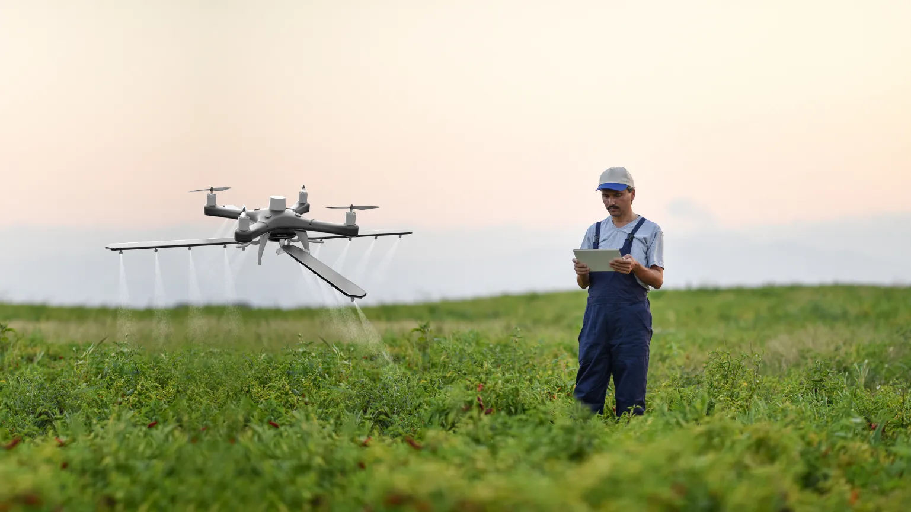

Meaningful Impact
We don't build technology for its own sake. Every solution we develop is measured by the real difference it makes for communities, businesses, and the environment in Sabah.
End-to-end IoT development and embedded systems for communities and industries in Sabah. We deploy solar-powered WiFi mesh networks to eliminate cellular blindspots in remote areas — turning dead zones into connected communities.
A Sabah-based IoT development company rooted in Borneo, building smart embedded systems and digital solutions for real-world impact.
Rogon Network is a Sabah-based technology company focused on delivering IoT solutions and smart systems that are designed for real-world environments. We specialise in eliminating cellular blindspots through solar-powered WiFi mesh networks — bringing connectivity to the most remote corners of Sabah where traditional infrastructure can't reach.
Our team combines expertise in embedded systems, software engineering, and community engagement to deliver solutions that bridge the digital divide. Whether it's deploying solar mesh nodes in remote villages, building greenhouse monitoring systems for agriculture, or installing water quality sensors for fish farms, we approach every project with a commitment to quality, sustainability, and local impact.
We don't build technology for its own sake. Every solution we develop is measured by the real difference it makes for communities, businesses, and the environment in Sabah.
Our solutions are designed to thrive in Sabah's unique terrain, climate, and infrastructure conditions — from urban centers to the most remote villages.
We prioritize sustainable, maintainable solutions that continue to deliver value long after deployment, with local support and capacity building at the core.
We help farmers, fish farm operators, and rural communities in Sabah monitor what matters — turning sensor data into action through remote dashboards, IoT devices, and solar-powered connectivity.
Best for: swift houses, greenhouses, fish farms
Real-time monitoring dashboards that let you view sensor data, track conditions, and get alerts from anywhere. Built for swift houses, greenhouses, fisheries, and field deployments — see what your sensors see, anytime.
Learn moreBest for: agriculture sensors, water monitoring, environment tracking
End-to-end IoT solutions including hardware prototyping, embedded firmware, sensor networks, and cloud integration. We design systems for swift house environment monitoring, greenhouse agriculture sensors, and water quality monitoring for fisheries — collecting and acting on data from the field.
Learn moreBest for: local adoption, training, long-term sustainability
Technology adoption isn't just about hardware — it's about people. We work closely with local communities to ensure our solutions are understood, adopted, and sustained.
Learn moreBest for: remote villages, plantations, mountainous areas
Eliminate cellular blindspots with self-sustaining, solar-powered WiFi mesh networks. Purpose-built for Sabah's remote terrain — no grid power, no infrastructure, just reliable connectivity where it's needed most.
Learn moreHow it comes together
Comprehensive technology services designed to meet the unique challenges of operating in Sabah and beyond.
Real-time web dashboards to monitor your sensors, track environmental data, and receive alerts — all accessible from your phone or computer. View temperature, humidity, water quality, and more at a glance.
From concept to deployment, we design and build sensor networks, embedded firmware, and IoT infrastructure. Specialised solutions for swift house environmental monitoring, greenhouse climate control for agriculture, and water quality sensors for fisheries and aquaculture.
We eliminate cellular tower blindspots using remote solar-powered WiFi mesh nodes. Self-sustaining, off-grid, and purpose-built for Sabah's most isolated communities and challenging terrain.
We collaborate with government agencies, NGOs, and private sector partners to scale technology initiatives and create lasting digital ecosystems in Sabah.

A structured methodology that ensures every project delivers real, measurable results.
Every successful IoT project begins with a deep understanding of the environment, the people, and the problem. We spend time on the ground — visiting sites, talking to stakeholders, and gathering requirements that go beyond the technical specifications.

With a clear picture of the requirements, we design a system architecture that balances performance, cost, and maintainability. Our designs account for local constraints like power availability, network reliability, and environmental conditions.

Our development process is iterative and transparent. We build, test, and refine in cycles, keeping stakeholders informed at every stage. From firmware to frontend, every component is developed with maintainability and robustness in mind.

Deployment is where everything comes together. We handle installation, configuration, training, and handover — ensuring the solution is not just technically operational but truly adopted by the people who will use and maintain it.

Common questions about our IoT services in Sabah
Yes. We deploy greenhouse environment sensors for agriculture — monitoring temperature, humidity, soil moisture, and light levels. For fisheries and aquaculture, we install water quality sensors that track pH, dissolved oxygen, turbidity, and temperature. Our swift house monitoring solutions provide real-time environmental data for livestock and poultry operations, helping farmers and producers make data-driven decisions.
We deploy self-sustaining mesh nodes powered by solar panels in areas with poor or no cellular coverage. Each node captures and relays signal through a mesh topology, creating a resilient WiFi network that covers previously unreachable locations. The system is entirely off-grid, requiring no electrical infrastructure — ideal for Sabah's remote villages, plantations, and mountainous terrain.
We provide end-to-end IoT solutions including environmental monitoring systems, smart agriculture sensors, rural connectivity infrastructure, asset tracking, and custom embedded systems. Our solutions are designed specifically for the unique challenges of Sabah's geography and climate.
We use a combination of technologies including LoRaWAN for long-range, low-power sensor communication, satellite backhaul where cellular coverage is unavailable, and community-managed Wi-Fi access points. Each deployment is custom-designed based on the specific location's infrastructure and needs.
Yes. We have in-house expertise in embedded systems design, PCB development, and hardware prototyping. We can develop custom sensor nodes, control systems, and data loggers tailored to your specific requirements — from proof-of-concept to production-ready devices.
Project timelines vary depending on complexity. A typical IoT deployment — from discovery to deployment — ranges from 2 to 6 months. Smaller proof-of-concept projects can be delivered in 4–8 weeks. We provide detailed timelines during the discovery phase and keep stakeholders updated throughout.
Absolutely. We offer comprehensive support packages including remote monitoring, on-site maintenance visits, firmware updates, and technical support. We also provide training for local teams to build capacity for long-term self-sufficiency where appropriate.
Have an IoT project in Sabah? Let's talk about how we can help bring your ideas to life.